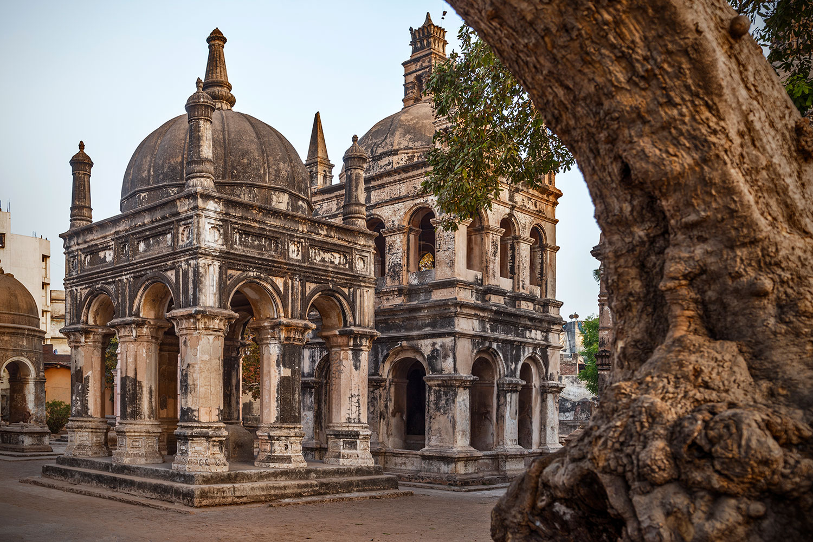
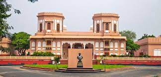
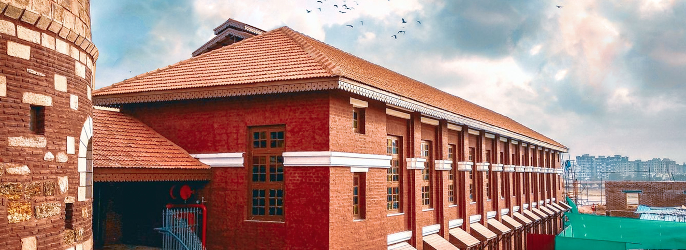
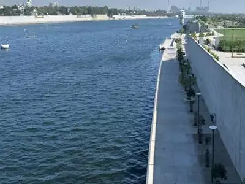
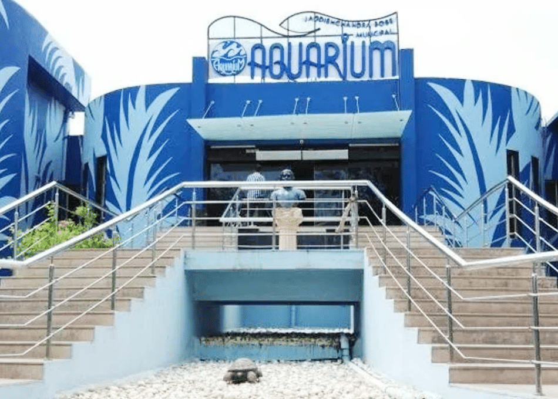
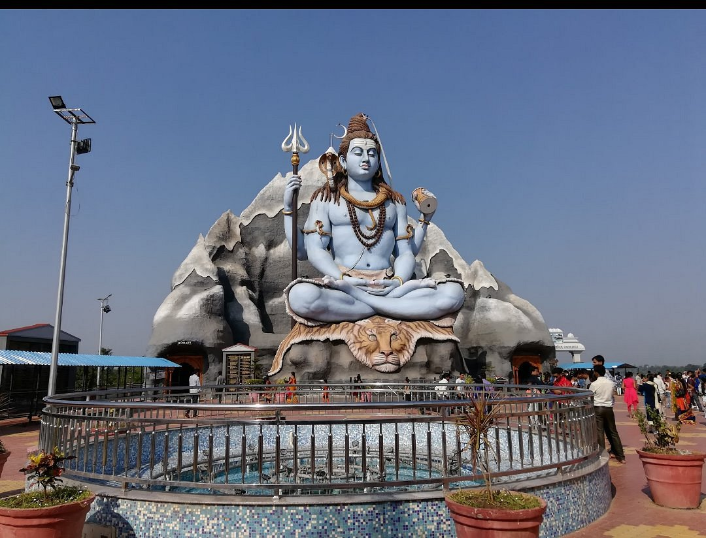
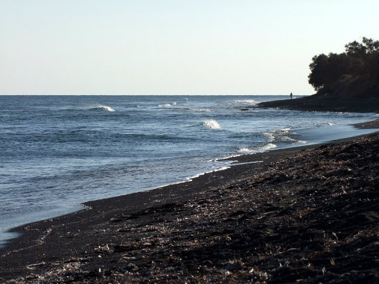
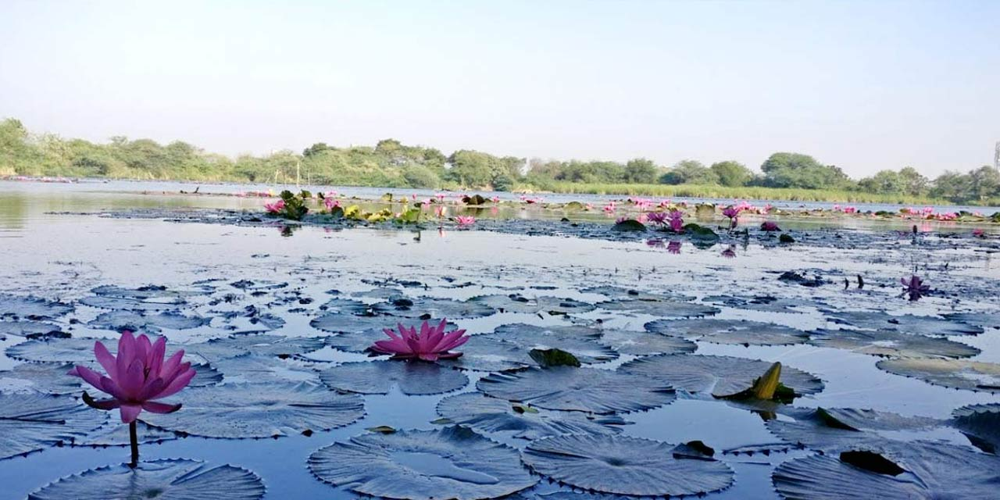
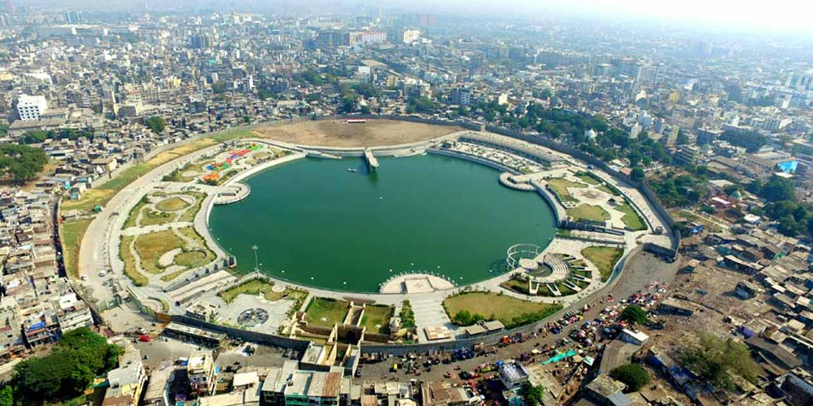
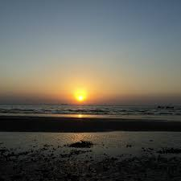

Dutch And Armenian Cemetery is a Tomb and architecture. Great place right in the middle of Concrete Jungle in the metropolis. Beautiful memorial verses have been engraved on the tombs. Tombs of army soldiers, captains and their families fill up this medium sized ground. Each touching verse spoke about how the person had lived, how he or she touched their lives and how they wish his or her soul rests in peace.
Sardar Patel Museum is in Surat, Gujarat, India, and was established in 1891. At the time of establishment, the museum was well known as th independence. The museum is also known as Sardar Sangrahalaya. The museum consists of a planetarium, ancient relics, paintings, science gallery, amphitheatre, art gallery, auditorium and restaurant. The audio in the auditorium will be in three languages-Hindi, Gujarati and English. The museum has more than eight thousand relics and antiques.
Surat Castle, or Surat Fort is a castle built in defence. The audio visual history of the castle is very informative. Many galleries have artefacts that are very informative.One can dive into the glorious past of Surat by visiting this place. Documentary is shown in a very realistic way
Tapi River Front is an outdoor development depicting an outstanding view of the graceful river Tapi at the Tapi Riverfront. Be mesmerised by the glorious sunset or relax under the twinkling night sky.
Jagdishchandra Bose Municipal Aquarium has a turtle and Jellyfish Pools and a shark tunnel at an aquarium also showcasing native fish species.
Galteshwar is situated on confluence of rivers Mahi and Galti which hosts a Shiva Temple from the Solanki era..Two fairs are held here every year,on Janmashtami and on Sharad Purnima.One can also enjoy swimming as Tapi river flows here.
Dumas Beach is a rural beach. It is a popular tourist destination in Surat.It offers excellent views of the beach.ATV Bikes and Camel Rides are also there.
A nature lover's treat and a bird watcher's paradise, Gavier Lake in Surat may as well be heaven on earth. With coloured lotuses floating on the surface and hundreds of enthusiastic birds flooding the air with melodious bird song, this is a wonderful place where you can catch a break from the monotonous city life. The overwhelming greenery and beautiful butterflies are sure to lift your spirits.
Gopi Talav is an artificial pond in a bustling parklike setting.Activities like Boating,Zip Liner,Toy Train ride,Game zone,Kids play area and a flea market.
Suvali Beach or Swally Beach is an urban beach.The cleanest beach in India.Camel and horse rides also involved.Beautiful location for pre- wedding or any kind of photoshoot.
